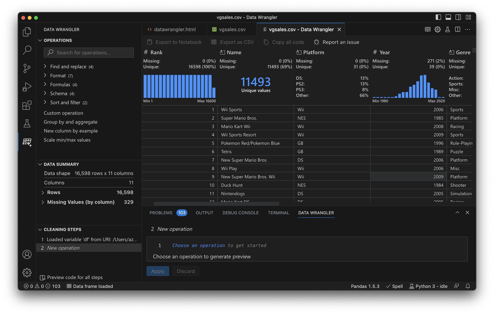

Optimiza tu día con algoritmos genéticos
¡Hola! ¿Eres data analyst? Pues ven, que te cuento üòä
¿Te gustaría mezclar la comodidad de Power Query con la potencia de Pandas en Python? Entonces debes conocer esta extensión para VS Code: Data Wrangler.
Es una interfaz gráfica al estilo de Power Query que en vez de generar código M, genera código Python con su librería Pandas. Permite realizar procesos ETL y pequeñas transformaciones con clics (como Power Query).
Permite generar pasos también y obviamente, puedes modificar el código en Python... ¡o crearlo tú y ver el resultado visualmente!
Permite trabajar con extensiones .csv, .xlsx, .parquet... y puedes obtener todo tu código generado.
¿Otro punto a favor? La extensión es oficial de Microsoft.
En el futuro, exploraremos cómo implementar estos conceptos en proyectos reales, como la unión de bases de datos en la nube y la creación de APIs que interactúen con tus sistemas. ¡Mantente atento para más detalles sobre cómo la ciencia de datos puede transformar tu flujo de trabajo!
¡Saludos!